Immortality_860201
| ARCHIVE CODE | Immortality_860201 |
| INTERNAL INDEX | PC-ORG-010 |
| ACCESS LEVEL | RESTRICTED / LOCAL STATIC EXPORT |
| CLASSIFICATION | INCIDENT / RECOVERED FILE |
| ORIGIN TITLE | 불멸을 향해 |
| ATTACHMENTS | 15 |
AUDIO LOG // 7cf49115c367.mp3
불멸을 향해
Blood Lake Incident File
독일 본토 ██ 지역에서 이상현상 감지됨
XX 정찰 부대에 의해 최초 발견
이 문서는 독일 본토 ██ 지역에서 발생한 피의 호수 관련 이상현상과, 현장 촬영 및 통신 임무를 수행하던 유닛2의 작전 기록을 정리한 사건 파일이다
현장 인근 주민들의 제보에 따르면 붉은 액체가 강을 뒤덮었으며, 피로 뒤덮이거나 살이 찢겨진 야생 동물들이 마을을 덮친 것으로 보고되었다
해당 현상은 혈교 또는 혈액성 의식과 관련된 사건으로 추정되며, 이후 피의 호수와 연결되는 다수의 이상현상이 확인되었다
기록 정보
문서 분류
분류명:불멸을 향해
영문명:Blood Lake Incident File
기록 형태:작전 로그 / 현장 촬영 기록 / 통신 기록 / 이상현상 보고서
관련 지역:독일 본토 ██ 지역
관련 현상:피의 호수 / 혈액성 잔류물 / 이상 안개 / 야생 동물 변질
관련 피해자:마렌 예거트 / 요나스 밀로 / 유닛4 / 유닛7
보안 등급:기밀
위험도:High ~ Extreme
사건 개요
독일 본토 ██ 지역에서 붉은 액체가 강을 뒤덮는 이상현상이 보고되었다
현장 근처에 거주하던 주민들은 피로 뒤덮인 야생 동물, 살이 찢겨진 짐승, 안개에 가려진 언덕길, 나무 위에 매달린 미확인 물체 등을 목격했다고 진술하였다
해당 지역은 초기에는 화이트존으로 분류되었으나, 현장 기록과 통신 두절, 피의 호수 발견 이후 레드존 후보 지역으로 재분류되었다
본 기록은 유닛2가 현장에 투입된 이후 전송한 사진, 통신, 위치 추적 자료, 심리 상태 기록을 기반으로 복구되었다

작전 투입 기록
유닛2
마렌 예거트 현장 촬영 및 통신 담당
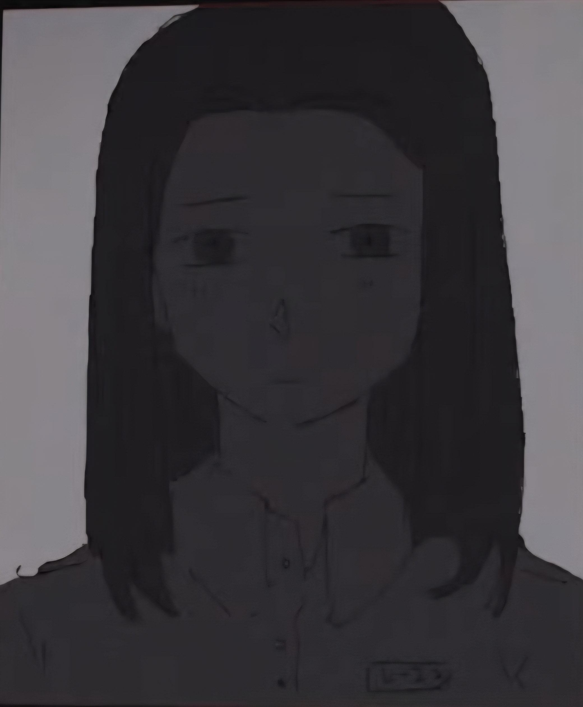
요나스 밀로 기술 지원 전문가
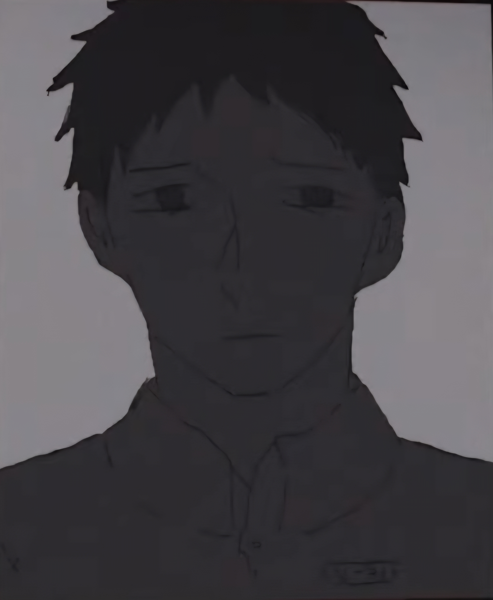
지급 장비
유닛2에게는 현장 정찰을 위한 3일치의 보급품과 손전등, 통신 장비, 특수 촬영 장비, I.P.D 장치, N.H.C에서 사용하는 대화력 무기가 지급되었다
해당 장비는 이상현상 감지 지역에서의 생존, 위치 추적, 심리 상태 측정, 고위험 개체와의 교전 가능성을 고려하여 지급된 것으로 확인된다
대기 병력
유닛2의 구조 요청이 확인될 경우 즉시 대응할 수 있도록 중무장팀이 인근 대기 지점에 배치되었다
그러나 현장 통신 상태가 불안정해지면서 구조 요청의 정확한 수신 여부와 위치 확인에 문제가 발생하였다
현장 기록 장비 운용 및 사진 전송, 본부와의 통신 연결은 마렌 예거트가 담당한 것으로 확인된다
작전 시간 기록
16:10
유닛2 현장 도착
유닛2가 현장에 도착
유닛2에는 다음 장비가 지급되었다.
- 3일치 보급품
- 휴대용 손전등
- N.H.C 규격 대화력 무기
- 개인 추적용 I.P.D 장치
- 현장 촬영 장비
- 혈액 오염 감지 키트
- 단거리 통신 장치
유닛2의 구조 요청이 확인될 경우 즉시 대응할 중무장 지원팀이 대기 상태에 들어갔다.
16:27
초기 통신 연결
〔예거트〕: 본부로 사진 전송 중, 확인 바람.
〔본부〕: 전송 확인됨. 대기하라.
16:31
IMG001
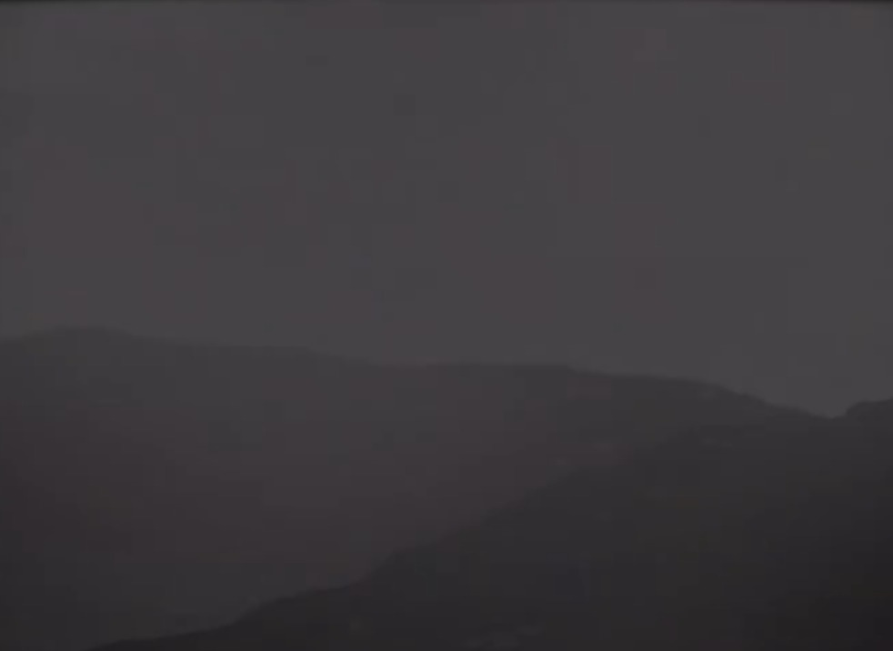
고화질 사진 전송 확인
안개로 인해 언덕길의 시야 확보가 불가능한 상태.
가시거리는 극히 제한적이며, 기온 하강 및 습도 상승이 동반됨.
본부 분석
해당 안개는 자연 발생 안개와 성분이 일부 다르며, 미세한 혈액성 입자 반응이 감지됨.
16:46
IMG002
다수의 나무 위에 미확인 물체 발견
현장 주변 나무 위에 다수의 미확인 물체가 매달려 있는 것이 확인되었다.
형태는 불명확하며, 시신 또는 찢긴 동물의 사체일 가능성이 제기되었다.
〔본부〕: 해당 지점과 거리를 유지한 채 이동하라.
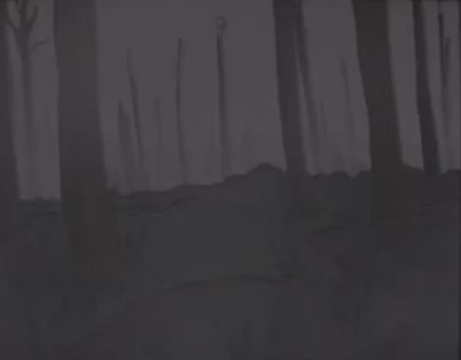
17:02
버려진 텐트 발견
〔예거트〕: 버려진 텐트가 보인다.
〔밀로〕: 나라면 저기로 안 갈 거야.
〔예거트〕: 아직 작전지의 절반도 오지 않았어. 겁쟁이처럼 굴지 마. 본부, 텐트 내부를 수색해도 될지 승인 여부 바람.
〔본부〕: 특수 장치로 촬영한 사진 전송 바람. 확인 후 승인 여부를 알려주겠다.
17:09
IMG003
텐트 외부 확인
특수 장치로 촬영된 텐트 외부 사진 분석 결과, 명확한 이상현상은 발견되지 않음.
〔본부〕: 텐트 내부 수색을 승인한다. 단, 5분 이상 체류하지 마라. 날이 어두워진다.
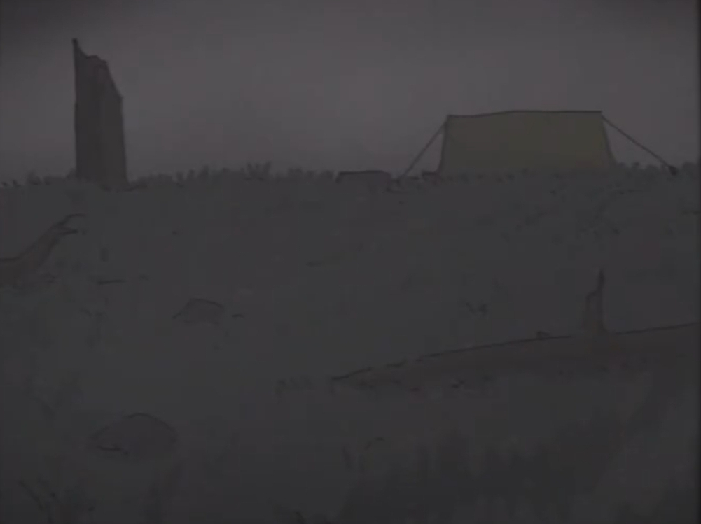
17:16
IMG004
텐트 내부 수색 결과
텐트 내부에서는 민간인이 머물렀던 흔적이 발견되었다.
확인된 물품은 다음과 같다.
- 이어폰 2개
- 침낭
- MP3 플레이어
- 다량의 혈흔
현장 상태를 바탕으로 최소 2명의 민간인이 해당 장소에 머물렀던 것으로 추정된다.
〔예거트〕: 본부?
〔본부〕: 계속 이동해라.
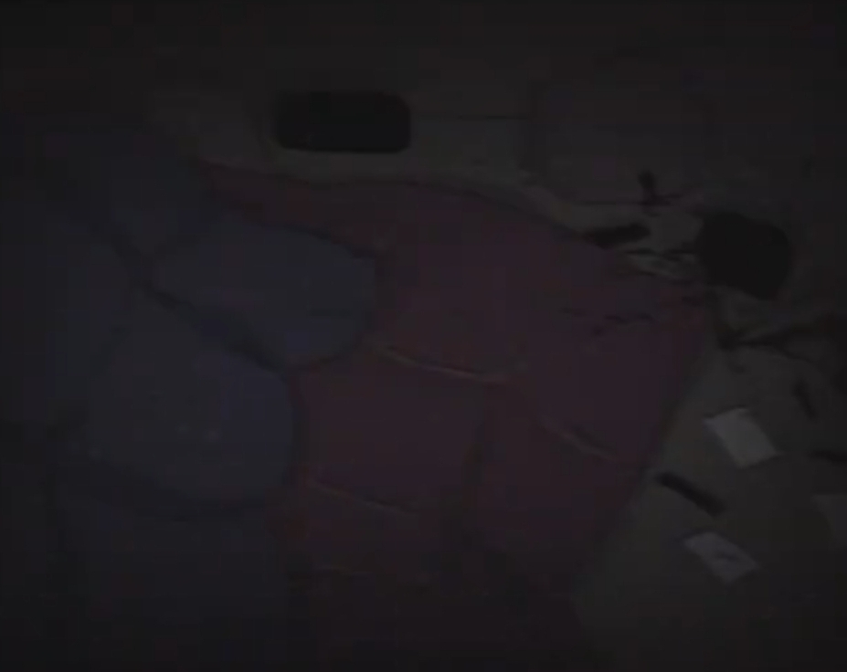
17:41
강변 접근
유닛2가 강변 지대에 접근하였다.
현장 영상에서 강물의 색이 정상 범위를 벗어난 것으로 확인되었다.
본부 분석
강물은 단순한 적색 오염수가 아니며, 혈액과 유사한 점도 및 응고 반응을 보인다.
17:58
IMG005
거대한 개체 및 피의 호수 발견
현장 깊숙한 지점에서 대규모 혈액성 액체 웅덩이, 이른바 피의 호수가 발견되었다.
동시에 그 주변에서 비정상적으로 거대한 개체의 실루엣이 포착되었다.
피의 호수는 정적인 액체가 아니라, 마치 내부에서 미세한 파동과 움직임이 감지되는 형태로 보고되었다.
〔예거트〕: 무서워.
〔본부〕: 이유는?
〔예거트〕: 나도 잘 모르겠다, 본부.
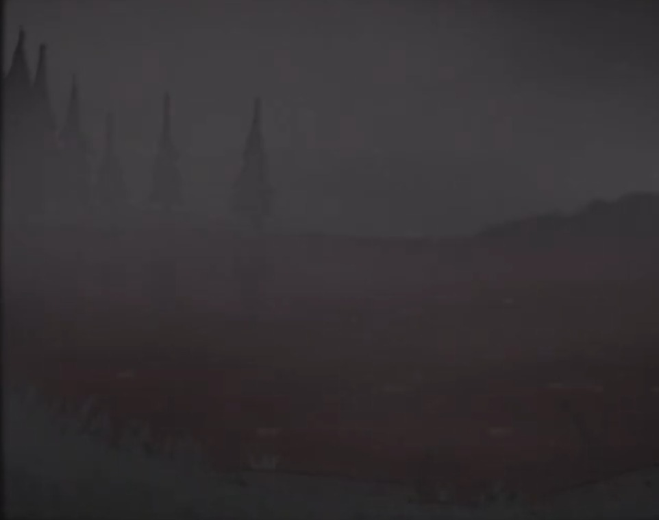
18:06
심리 상태 이상 감지
예거트에게 부착된 I.P.D 장치에서 심박수 증가, 호흡 불안정, 손 떨림, 방향 감각 저하가 감지되었다.
본부 기록
외상 없음. 적성 개체와의 직접 접촉 없음.
정신 간섭형 이상 반응 가능성 있음.
18:14
유닛4 통신 두절
유닛4와의 통신이 완전히 두절되었다.
동시에 전반적인 통신 상태 불량이 보고되었다.
유닛4에게 부착된 I.P.D 장치가 강제 활성화되었으며, 위치 추적 시스템에 연결되었다.
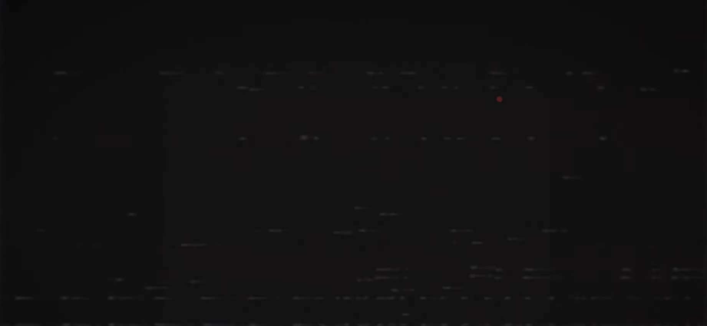
18:22
유닛7 이동 개시
〔본부〕: 유닛7이 현재 유닛4에게로 향하는 중이다. 계속 강을 따라서 이동해라. 걱정마라.
〔예거트〕: 무서워.
18:29
예거트 심리 안정 수치 불안정
예거트에게 부착된 I.P.D 장치에서 심리 안정 상태가 불안정함을 확인하였다.
심리 치료팀 대기.
그러나 현장 상황상 즉각 회수는 불가능.
본부 기록
움직임이 좋지 않다.
보행 속도가 일정하지 않고, 같은 지점에서 반복적으로 멈추는 현상이 확인됨.
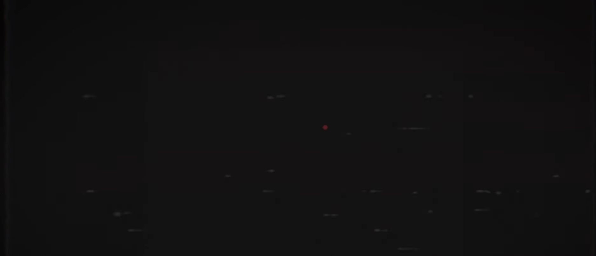
18:37
밀로 I.P.D 장치 활성화
밀로에게 부착된 I.P.D 장치 활성화 확인.
위치 추적 시스템에 연결됨.
밀로는 예거트의 후방 약 300m 지점에서 이동 중인 것으로 표시되었다.
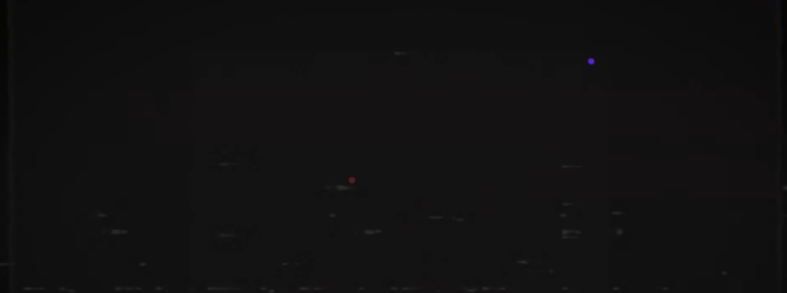
18:42
이상 이동 패턴 감지
.....뭔가 이상하다.
밀로의 움직임이 비정상적이다.
밀로의 이동 경로는 일반적인 인간의 보행 패턴과 일치하지 않는다.
짧은 시간 동안 지나치게 빠르게 접근하거나, 특정 지점에서 비정상적으로 정지하는 양상이 반복된다.
〔본부〕: 예거트, 즉시 총기를 꺼내라. 위험 상황에 대비하라.
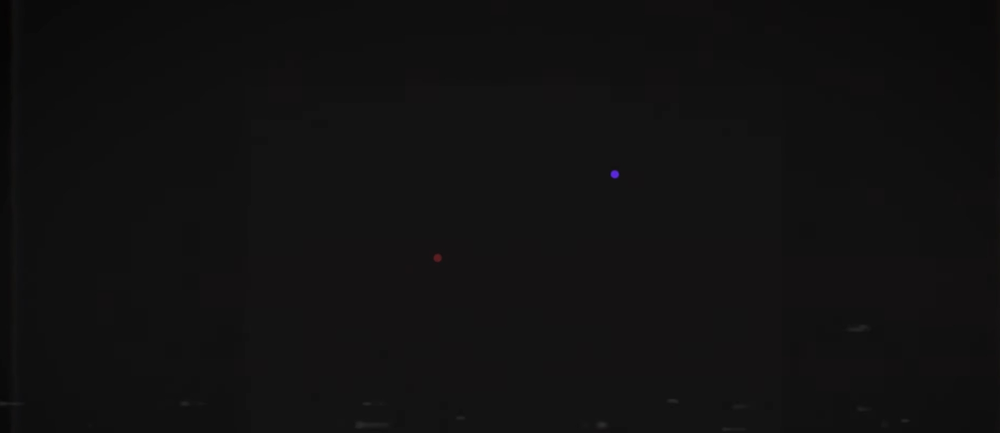
18:44
비인가 통신 기록
우리가 전부 미안해, 예거트
이 문장은 본부 기록에 남아 있으나, 누가 어떤 의도로 해당 표현을 사용했는지는 불명이다.
일부 분석관은 이를 단순 오기록이 아닌, 통신망에 개입한 제3의 존재 또는 혈교 의식으로 인해 왜곡된 송신으로 추정한다.
18:51
마지막 정상 통신
〔본부〕: 유닛7 이동 중임을 확인. 보고하라.
〔#%$〕: .......
이후 통신 품질이 급격히 저하되었다.
18:56
IMG006
마지막 이미지 전송
호수가 당신을 기다린다... 수천 개의 손이 당신을....
마지막으로 전송된 이미지에는 피의 호수 표면으로부터 다수의 손과 유사한 형상이 솟아오르는 장면이 담겨 있었다.
형상은 인간의 손과 유사했으나, 관절 구조와 길이가 비정상적으로 뒤틀려 있었다.
이미지 표면에는 분석이 불가능한 문장 일부가 노이즈처럼 남아 있었다.
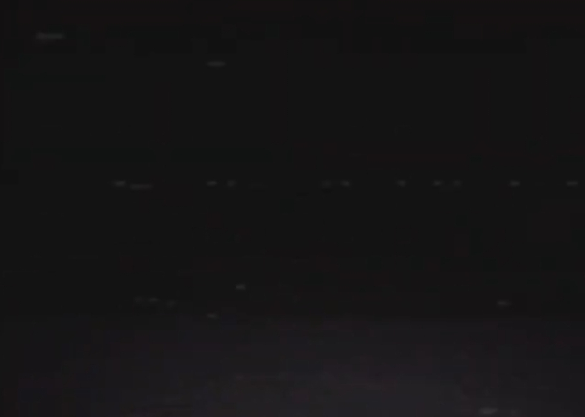
19:00
임무 상태: 완료
시스템상 임무는 완료로 처리되었다.